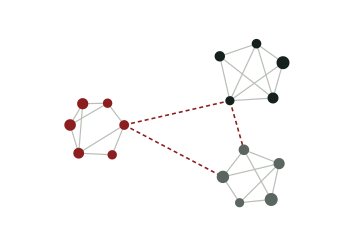

Teaching
Economics for business students, mostly at first-year level, at Tecnocampus since 2011.
Currently at Tecnocampus
-

Economic and Social Implications in Social Networks
How do networks shape what we buy, believe, vote for and earn? The course brings economics, sociology and political science into one framework, and turns to behavioral insights where standard models fall short. The Networks Lab is an interactive town where you can shape its ties, apply shocks and policies, and watch what follows.
Open the Networks Lab -
Introduction to Economics
First-year foundations: how consumers and firms decide, how markets set prices, and when they fail, taught through everyday business examples.
-
Macroeconomics
Growth, inflation, unemployment and the role of policy: reading the economy as a whole, and what it means for business decisions.
-
International Economics
Why countries trade, who gains and who loses, and how exchange rates, trade policy and global integration affect firms.
Previously taught
- Education, Training and Labor MarketUniversitat Pompeu Fabra
- Health and Society (graduate)Universitat Rovira i Virgili
- Social Research MethodsUniversitat Rovira i Virgili
- Tourist Enterprise Project Design (graduate)Universitat Rovira i Virgili
- Microeconomics 3Universitat Internacional de Catalunya
- Sociology of Work, Industrial Relations TheoryUniversitat Pompeu Fabra
- Spanish Politics, Political Theory, Catalan PoliticsUniversitat Pompeu Fabra
- Quantitative Research MethodsIBEI, Barcelona
- Introduction to Operational Research, Game TheoryWarsaw School of International Trade and Finance
- EconometricsWarsaw School of Economics
Teaching merits
Three quinquennis de docència awarded, covering 2007–2014, 2014–2019 and 2019–2024.
Download CV (PDF)